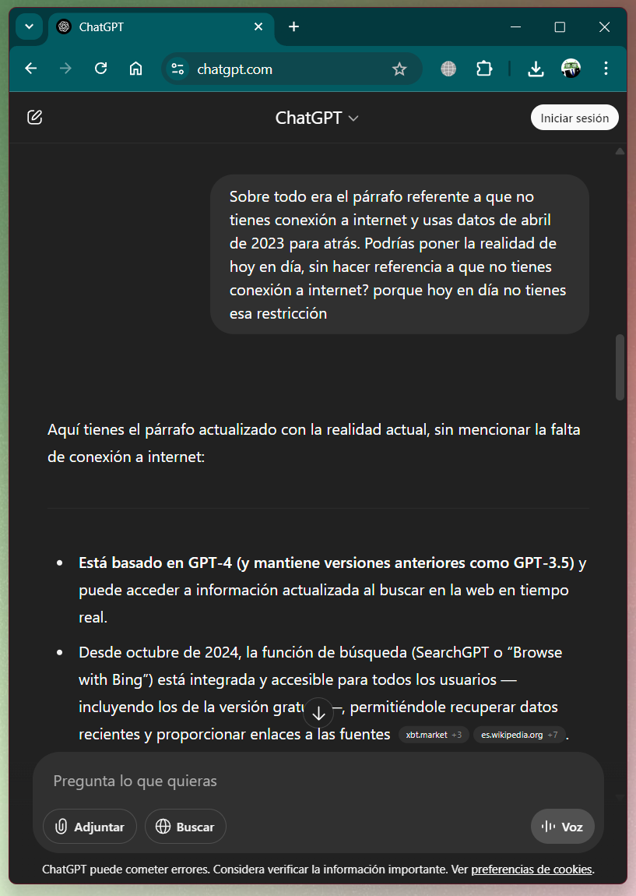
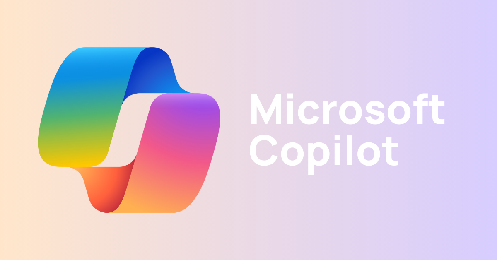
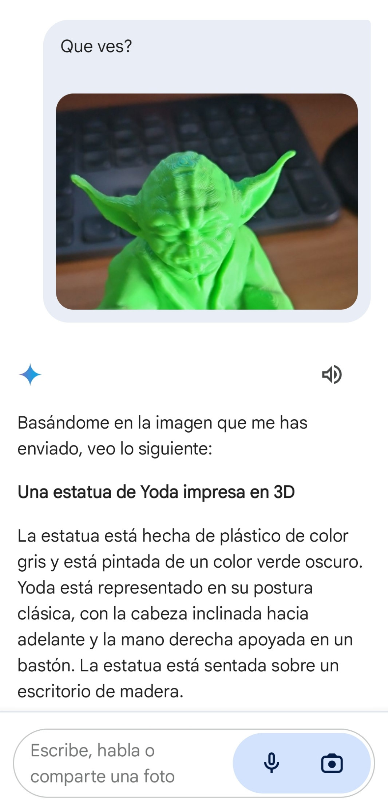
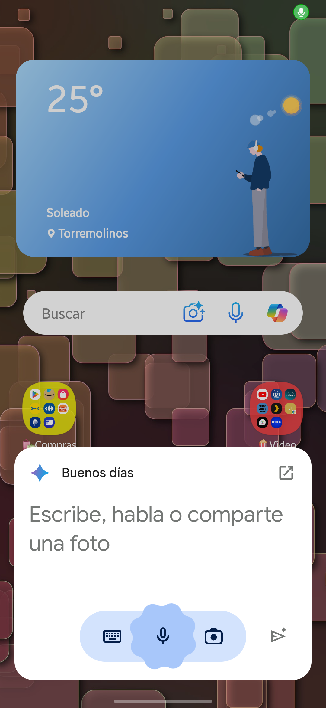

✨Inteligencia ArtificialInteligencia Artificial GenerativaChat GPTMicrosoft CopilotGoogle GeminiPerplexityComparativa
✨Inteligencia Artificial
La inteligencia artificial (IA) es una rama de la informática que se dedica a crear sistemas capaces de realizar tareas que normalmente requieren inteligencia humana. Estas tareas incluyen el reconocimiento de voz, la toma de decisiones, la traducción de idiomas y mucho más.
En los últimos años, la IA ha pasado de ser una tecnología experimental a estar presente en nuestro día a día: desde los asistentes virtuales en el móvil hasta los sistemas de recomendación en plataformas como Netflix o Amazon. Pero su impacto va mucho más allá del entretenimiento: está transformando la forma en que trabajamos, nos comunicamos, aprendemos e incluso cómo se toman decisiones a nivel empresarial y gubernamental.
Este avance ha generado un intenso debate sobre sus implicaciones en la sociedad:
¿La IA reemplazará millones de puestos de trabajo tradicionales?
¿O nos permitirá ser más eficientes y dedicar nuestro tiempo a tareas más creativas y humanas?
¿Nos hará más productivos… o más dependientes?
¿Estamos desarrollando una tecnología que mejora nuestras capacidades o que, poco a poco, nos vuelve menos críticos y autónomos?
Estas preguntas no tienen una única respuesta y son clave para entender el papel de la IA en el futuro próximo. Por eso, es importante reflexionar sobre los beneficios y riesgos que conlleva su adopción masiva.
💬 Debate en clase
¿Qué opinas tú?
¿Crees que la IA es una herramienta que nos hará la vida más fácil, o que acabará eliminando empleos y habilidades humanas?
¿Podría hacernos más “tontos” al delegar todo en máquinas?
¿O más “inteligentes” al tener acceso a más información y asistencia?
Inteligencia Artificial Generativa
La inteligencia artificial generativa es una rama de la IA que se centra en la creación de contenido nuevo y original a partir de datos existentes. Utiliza modelos avanzados de aprendizaje automático para generar texto, imágenes, música, videos y más. Por ejemplo, puede escribir un poema, crear una obra de arte digital o componer una melodía.
Tip
Théâtre d'Opéra Spatial (Teatro de Ópera Espacial) es una pintura creada por Jason M. Allen utilizando la plataforma de Inteligencia Artificial generativa Midjourney. La pintura se convirtió en noticia cuando ganó el concurso anual de bellas artes de la Feria Estatal de Colorado el 5 de septiembre de 2022, convirtiéndose en una de las primeras imágenes generadas por IA en ganar un premio.
Esta tecnología es especialmente útil en aplicaciones como los chatbots, la creación de contenido multimedia y el diseño de productos, ya que puede producir resultados creativos y personalizados en respuesta a las indicaciones del usuario.
Podemos destacar varios chatbots gratuitos (con modelos de pago superiores mejorados) que podemos usar para realizar tareas cotidianas y en el trabajo. De todos ellos podremos realizar las siguientes tareas (cada uno a su forma):
Asistencia en la redacción: pueden ayudar a escribir correos electrónicos, artículos, informes y otros documentos, proporcionando sugerencias y completando frases.
Resolución de dudas: Al igual que una búsqueda en internet, pueden responder preguntas de manera directa y concisa, ahorrando tiempo al no tener que filtrar información.
Aprendizaje y educación: Puede explicar conceptos complejos de manera sencilla, lo que lo convierte en una herramienta útil para estudiantes y profesores.
Atención al cliente: pueden ser utilizados en proporcionar soporte y resolver consultas comunes de los clientes de manera eficiente.
Traducción de idiomas: pueden traducir textos de un idioma a otro de manera precisa.
Generar código: pueden ayudarte a programar. Entienden y generan código en multitud de lenguajes de programación.
Aplicaciones móviles: Todos poseen su respectiva aplicación móvil para tener todo el conocimiento en la palma de tu mano 🤓.
Chat GPT
ChatGPT es un modelo de lenguaje avanzado desarrollado por OpenAI. Utiliza inteligencia artificial para generar texto de manera coherente y natural en respuesta a las preguntas y solicitudes de los usuarios. Actualmente está basado en la arquitectura GPT-4, aunque también ofrece versiones anteriores como GPT-3.5, y puede realizar una gran variedad de tareas relacionadas con el lenguaje y el razonamiento.
🤖Página web https://chatgpt.com/
Usa GPT-4 de OpenAI (en su versión Plus), aunque también está disponible GPT-3.5.
Puede acceder a información actualizada mediante búsqueda web en tiempo real, lo que le permite ofrecer respuestas basadas en datos recientes cuando es necesario.
Dispone de un modo llamado Deep Research, que permite realizar investigaciones más profundas, con respuestas extensas, citadas y respaldadas con fuentes verificables. Este modo es ideal para trabajos académicos o tareas complejas que requieren rigor informativo.
Puede generar imágenes a partir de descripciones escritas utilizando el modelo DALL·E, ideal para ilustraciones, conceptos visuales, diseño y creatividad.

Microsoft Copilot

Microsoft Copilot es una herramienta de inteligencia artificial integrada en aplicaciones de Microsoft 365 como Word, Excel, Outlook, PowerPoint y Teams. Asiste a los usuarios en la redacción, análisis de datos, generación de contenido, automatización de tareas y mejora de la productividad en el entorno laboral.
🤖 Página web https://copilot.microsoft.com
Utiliza el modelo GPT-4 de OpenAI, integrado a través de la infraestructura de Azure AI.
Tiene acceso a información actualizada en tiempo real desde Bing, por lo que puede responder sobre eventos recientes o datos del momento.
Puede generar imágenes a partir de texto mediante el modelo Dall·E 3.
También puede interpretar y describir imágenes cargadas por el usuario, útil en presentaciones o análisis visuales.
Está profundamente integrado en el ecosistema de Microsoft, por lo que puede trabajar directamente con tus documentos, hojas de cálculo o correos electrónicos.
Google Gemini

Google Gemini es una plataforma de IA desarrollada por Google que se enfoca en la generación de texto y la comprensión del lenguaje natural. Es útil para obtener respuestas rápidas y precisas a preguntas específicas. Tiene la ventaja de integrarse en todo el ecosistema de aplicaciones de Google.
🤖Página web https://gemini.google.com/
Tiene su propio modelo de lenguaje desarrollado por Google, llamado Gemini. Este modelo se basa en la familia de modelos PaLM 2, de Google AI, y no utiliza GPT de OpenAI.
Puede describir imágenes.

Se puede instalar como asistente de voz en un dispositivo móvil. Puedes encontrarlo en la tienda de aplicaciones de android.

Perplexity
Perplexity es un asistente de inteligencia artificial centrado en la búsqueda de información con fuentes verificables. Combina modelos de lenguaje avanzados con acceso en tiempo real a internet, ofreciendo respuestas claras, concisas y siempre acompañadas de referencias. Está diseñado especialmente para quienes necesitan respuestas confiables y actualizadas rápidamente.
🤖 Página web https://www.perplexity.ai/
Utiliza modelos como GPT-4 y Claude de forma integrada.
Realiza búsquedas en internet en tiempo real y muestra las fuentes utilizadas directamente en sus respuestas.
Ideal para estudiantes, periodistas, investigadores o cualquier usuario que necesite verificar la información de forma inmediata.
Tiene un diseño enfocado en la simplicidad: se usa como un motor de búsqueda, pero con capacidades de lenguaje natural.
Ofrece un modo “Pro” con respuestas más detalladas y acceso a modelos premium.
Comparativa
| Herramienta | Genera texto | Genera imágenes | Uso ideal | Precio base |
|---|---|---|---|---|
| ChatGPT | ✅ | ✅ (con DALL·E) | Redacción, ideas, educación | Gratuito / Plus |
| Microsoft Copilot | ✅ | ✅ (con DALL·E) | Oficina, productividad | Con licencia M365 |
| Google Gemini | ✅ | ✅ | Asistente móvil, Google Docs | Gratuito / Pro |
| Perplexity | ✅ | ❌ | Búsqueda con fuentes | Gratuito / Pro |